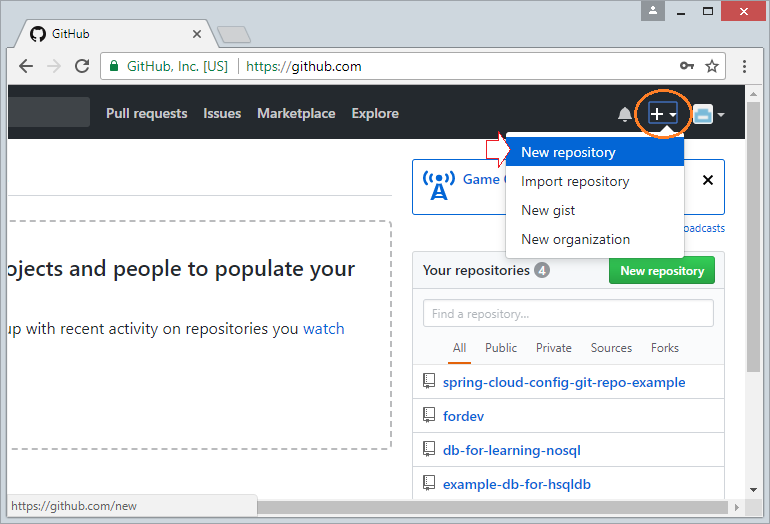

How To Setup Google Domain For Github Pages
1. How to register domain
1.1 Visit the homepageFreenom is the owner of the famous Dot.tk free domain name registration site in the old days.Besides .TK, Freenom is currently allowing
free registration of some other domain names such as .GA, .ML, .GQ, .CF. If necessary, you can register to try.
1.2. Find the right name
Enter your name which you register, in this article I will guide you to register a free domain name with a .tk name
1.3. Select "thanh toán"

1.4. Select "use DNS" ---> Fill IP address
Next step
1.5. Enter your email, then click on the button
1.6. Check email
Open your email and click the link to confirm

1.7. Fill your information
Note must fill in some required information

Then click "Complete order"

1.8. Register successfull

2. Instructions to push code to Github
2.1: Go to github.com to create a new repository:Right click on the right corner with the plus icon and select New repository
Name the new repository, then click Create repository.
Create a new repository
In the section above, for the most part, your part, the part of a repo part is called handuy.github.io, because the Github joke in the application
is repo. In your case, we have nothing else. After naming the full repo, click on Create archive

Copy the path of the newly created repo

Clone repo to your device with the following command:

Add / edit / delete files / folders on the newly-cloned repo, then run each of the following commands one after the other:

Go to Github repo to check
3.Create a repository on Github:
Log into Github , then click the + on the menu and select New repository
You will need to name your repository. You can choose the type of repository as Public (anyone can clone) and Private (only authorized
people can clone).

Once created, it will lead you to the manual page for working with the newly created repository. And your repository will now have the
address as https://github.com/$user-name/$repository, for example https://github.com/PhamHuy211199/17130086.git
Your job now is to clone this repository to your computer by command git clone địa_chỉ.
4. Delete A GitHub Repository
4.1: Log In to GitHub When you have the GitHub website pulled up, click on “Sign In” in the top right-hand corner of the page. Make sure to have your username
and password handy.
Once you’re logged in, a new page will load.
Many GitHub users will have dozens, possibly hundreds, of repositories. A large number of data to search through may require a more
detailed process. In order to find a specific repository among many others, you will have to go to your GitHub profile. To do so, click on
your picture or the generic avatar in the top right corner of the homepage. A dropdown menu will appear
. Click “Your Profile” and you
will be taken to your profile page.

Once you are on the profile page, you’ll see several menu options to the right of your image. There will also be a list of popular repositories
that are commonly used
. It’s not likely that you’ll want to delete a popular repo and will need to click on “Repositories” header for further search.
On this page, you’ll be able to scroll through your repositories. However, with many names, it will be easier to enter the name in the search
bar and press the enter/return key.
To the right of the search bar is a button that allows you to choose the type of repository to search. Click on it to see a list of categories that
may narrow the results further
. If there are hundreds of repositories with similar file names, sorting by type may be necessary. Once you
find the repository you wish to delete click on it and you’ll be taken to that specific repo page.

Once you’re on the page of the repository you wish to delete, find and click the header labeled “Settings” located on the right-hand side
of the menu.

The settings page of a repository has many subsections and options, but the section you need is very close to the bottom of the page.
Scroll down until you see a box outlined in a thin red line. It will be labeled “Danger Zone.”
Click the button on the bottom right corner
of the box labeled “Delete this Repository.”
Once you click the button to delete the repo, a pop-up window will appear.
repository” button
Typically, repositories can hold vast amounts of data, even entire applications. Deletion is a rare occurrence
. For this reason, you will have
to enter the specific name of the repository you want to remove permanently in the pop-up window. Once that name is entered correctly, the
button below will turn bright red. Now, you will click the button that says “I understand the consequences, delete this repository.”
If done properly, you will be rerouted back to the landing page you were on after you logged into GitHub. At the top of the page, directly
under the “Search GitHub” bar, you should see a message stating that your repository was successfully deleted.

5.Register github account
5.1.To create an account, you can go to Github's homepage at: Github.com
5.2.Then go to Sign up to create an account
5.3.Fill the information. Then you need to go to Email to activate the account.